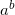
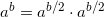
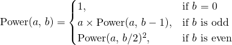
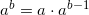
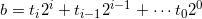
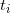
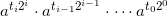
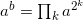
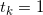
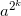

Did you ever think about the most efficient method to perform integer exponentiation, that is, raising an integer a to an integer power b, when either a or b, or both, are rather large?
Repeated multiplication
The naive method is, of course, repeated multiplications.  is a multiplied by itself b times. Here's how it's coded in my pseudo-code of choice, Python:
def expt_mul(a, b):
r = 1
for i in xrange(b):
r *= a
return r
Is this efficient? Not really, as we require b multiplications, and as I said earlier b can be very large (think number theory algorithms). In fact, there's a much more efficient method.
Exponentiation by squaring
The efficient exponentiation algorithm is based on the simple observation that for an even b, . This may not look very brilliant, but now consider the following recursive definition:

The case of odd b is trivial, as it's obvious that . So now we can compute by doing only log(b) squarings and no more than log(b) multiplications, instead of b multiplications - and this is a vast improvement for a large b.
This algorithm can be coded in a straightforward way:
def expt_rec(a, b):
if b == 0:
return 1
elif b % 2 == 1:
return a * expt_rec(a, b - 1)
else:
p = expt_rec(a, b / 2)
return p * p
Indeed, this algorithm is about 10 times faster than the naive one for exponents in the order of a few thousands. When the exponent is about 100K, it is more than 100 times faster, and the difference keeps growing for larger exponents.
An iterative implementation
It will be useful to develop an iterative implementation for the fast exponentiation algorithm. For this purpose, however, we need to dive into some mathematics.
We can represent the exponent b as:

Where  are the bits (0 or 1) of b in base 2. is then:

Or, in other words:
 for k such that 
 can be computed by repetitive squaring, and moreover, we can reuse the result from a lower k to compute a higher k. This directly translates into the following iterative algorithm:
def expt_bin_rl(a, b):
r = 1
while 1:
if b % 2 == 1:
r *= a
b /= 2
if b == 0:
break
a *= a
return r
To understand how the algorithm works, try to relate it to the formula from above. Using a standard "divide by two and look at the LSB" loop, the exponent b is broken into its binary representation. The lowest bits of b are considered first. a is continually squared to hold , and is multiplied into the result only when .
This algorithm is called right-to-left binary exponentiation, because the binary representation of the exponent is computed from right to left (from the LSB to the MSB) [1].
A related algorithm can be developed if we prefer to look at the binary representation of the exponent from left to right.
Left-to-right binary exponentiation
Going over the bits of b from MSB to LSB, we get:
def expt_bin_lr(a, b):
r = 1
for bit in reversed(_bits_of_n(b)):
r *= r
if bit == 1:
r *= a
return r
Where _bits_of_n is a method returning the binary representation of its argument as an array of bits from LSB to MSB (which is then reversed, as you see):
def _bits_of_n(n):
""" Return the list of the bits in the binary
representation of n, from LSB to MSB
"""
bits = []
while n:
bits.append(n % 2)
n /= 2
return bits
Rationale: consider how you "build" a number from its binary representation when seen from MSB to LSB. You begin with 1 for the MSB (which is always 1, by definition, for numbers > 0). For each new bit you see you double the result, and if the bit is 1, you add 1 [2].
For example consider the binary 1101. Begin with 1 for the leftmost 1. We have another bit, so we double. That's 2. Now, the new bit is 1, so we add 1, that's 3. We have another bit, so again double, that's 6. The new bit is 0, so nothing is added. And we have one more bit, so once again double, getting 12, and finally adding 1, getting 13. Indeed, 1101 is the binary representation of 13.
Back to the exponentiation now. As you see in the code of expt_bin_lr, the binary representation of the exponent is read from MSB to LSB. Since this is the exponent, each "doubling" from the rationale above is squaring, and each "adding 1" is multiplying by the number itself. Hence, the algorithm works.
Performance
As I've mentioned, the squaring method of exponentiation is far more efficient than the naive method of repeated multiplication. In the tests I ran, the iterative left-to-right method is about the same speed as the recursive one, while the iterative right-to-left method is somewhat slower. In fact, both the recursive and the iterative left-to-right methods are so efficient they're completely on par with Python's built-in pow method [3].
This is surprising, as I'd actually expect the right-to-left method to be faster, because it skips the reversing of bits when computing the binary representation of the exponent. I'd also expect the built-in pow to be faster.
However, thinking harder for a moment, I think I can see why this happens. The RL (right-to-left) version has to multiply larger numbers at all stages, because LR sometimes multiplies by a itself, which is relatively small. Python's bignum implementation can multiply by a small number faster, and this compensates for the need to reverse the bit list. I'll come back to this issue when I'll discuss modular exponentiation. But this is a topic for another article...

| [1] | From the looks of it (featuring the binary representation) you'd think this is a modern algorithm. Not at all! According to Knuth, it was first mentioned by the Persian mathematician Jamshīd al-Kāshī in 1427. The left-to-right method presented later in the article is even more ancient - it appeared in a Hindu book in about 200 BC. |
| [2] | This holds for any base, by the way. You can similarly build a number from its decimal digits by multiplying by 10 for each digit you see and adding the digit, at each step. |
| [3] | pow is coded in C and uses the iterative left-to-right method I described with some optimizations and complicated tricks. |